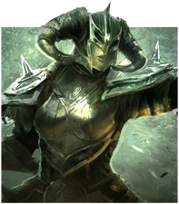
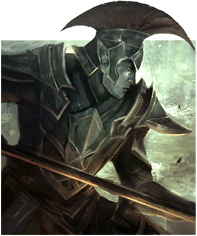

Altmer (High Elf)
Starting Area: Khenarthi's Roost
Racial Bonus: Altmer (High Elf) Racial Skills
Suggested Classes: Sorcerer or Templar
Strength: Magicka Builds
Altmer (High Elf) Racial Skills
Altmer (High Elf) Racial Skills in Elder Scrolls Online (ESO) are gained as the player increases his or her Character Level. Players will continue to gain Racial Passives until they reach level 50, which where they will cap out the Skill Line. Each Race has their own set of Skills that make them unique and better suited for certain roles and Builds. Be sure to study these when planning your character, as they can make the difference between a good player and a great player.
High Elf Racial Passives
Just looking at their Racial Passives, you can see that High Elves are more tuned towards the Magicka side of things, rather than Stamina. This means it is ideal to use them as either Magicka DPS or Healers, because they both take advantage of the Spell Damage and Max Magicka increase. These types of Builds use Staffs and are akin to “Mages” in other games, so if you wish to make a mage-like character, High Elf is a good choice.
Additionally, they have an intriguing Passive in Spell Charge, which grants them 645 Stamina if they have higher Max Magicka and 645 Magicka if they have higher Max Stamina, every 6 seconds if they use a Class Ability. This is both good for PvP and for Tanking.
In PvP, players will often CC you, forcing you to Break Free or die. Since this uses Stamina, and Magicka Builds usually have much lower Stamina pools, you will need all the Stamina you can get. And when Tanking, you will have more Stamina than Magicka, which allows you to gain Magicka every 6 seconds. You can use this Magicka for Damage Shields or other Skills that boost your surviveability, making it a valuable Passive.
Best Builds for High Elves
- Magicka DPS: Excellent (Destruction Staff)
- Stamina DPS: Not Good (Two-Handed Weapon, Dual Weapons, Bow)
- Healer: Good (Restoration Staff)
- Tank: Passable (One-Handed and Shield)
Bosmer (Wood Elf)

Starting Area: Khenarthi's Roost
Racial Bonus: Bosmer (Wood Elf) Racial Skills
Suggested Classes: Nightblade or Dragonknight
Strength: Stamina and Stealth
Bosmer (Wood Elf) Racial Skills
Bosmer (Wood Elf) Racial Skills in Elder Scrolls Online (ESO) are gained as the player increases his or her Character Level. Players will continue to gain Racial Passives until they reach level 50, which where they will cap out the Skill Line. Each Race has their own set of Skills that make them unique and better suited for certain roles and Builds. Be sure to study these when planning your character, as they can make the difference between a good player and a great player.
Wood Elf Racial Passives
Looking over the Passives you can see that Wood Elves are more inclined to be Stamina-based characters, and ones that incorporate some amount of Stealth into their gameplay. This means they will use some combination of martial weapons like Bows, Swords and Daggers.
Stealth is not particularly useful for PvE content outside of questing, but is useful in PvP. And though Max Stamina is good for Tanking, Stamina Recovery is not because Stamina Recovery ceases while Blocking, which Tanks do constantly. These bonuses place Wood Elves squarely into the Stamina DPS category, without much flexibility, if you’re looking to optimize.
Best Builds for Wood Elf
- Magicka DPS: Not Good (Destruction Staff)
- Stamina DPS: Good (Two-Handed Weapon, Dual Weapons, Bow)
- Healer: Not Good (Restoration Staff)
- Tank: Passable (One-Handed and Shield)
Khajiit

Starting Area: Khenarthi's Roost
Racial Bonus: Khajiit Racial Skills
Suggested Classes: Nightblade or Dragonknight
Strength: Stamina and Stealth
Khajiit Racial Skills
Khajiit Racial Skills in Elder Scrolls Online (ESO) are gained as the player increases his or her Character Level. Players will continue to gain Racial Passives until they reach level 50, which where they will cap out the Skill Line. Each Race has their own set of Skills that make them unique and better suited for certain roles and Builds. Be sure to study these when planning your character, as they can make the difference between a good player and a great player.
Below is the list of the Current Passive skills, along with a new list of Proposed Passive skills that is expected to arrive for Update 21 Wrathstone in February of 2019.
Khajiit Racial Passives
The Khajiit Racial Passives are a bit of mixed bag, and really facilitates any kind of play, though perhaps not quite as good as some other Races. Being harder to detect when Sneaking, and increased chance of Pickpocketing, marks the Khajit as a Stealthier character. This helps with some questing, stealing, and PvP. Consider selecting the Nightblade Class when choosing Khajit if you plan to PvP, the reduced detection range makes them much harder to find. Khajits also benefit from higher Critical Strike Chance because of their Crit Damage and Crit Healing bonus, so be sure to use gear that has this Stat.
Best Builds for Khajiit
- Magicka DPS: Good (Destruction Staff)
- Stamina DPS: Good (Two-Handed Weapon, Dual Weapons, Bow)
- Healer: Good (Restoration Staff)
- Tank: Good (One-Handed and Shield)
Nord

Starting Area: Bleakrock Isle
Racial Bonus: Nord Racial Skills
Suggested Classes: Templar or Dragonknight
Strength: Tanking
Nord Racial Skills
Nord Racial Skills in Elder Scrolls Online (ESO) are gained as the player increases his or her Character Level. Players will continue to gain Racial Passives until they reach level 50, which where they will cap out the Skill Line. Each Race has their own set of Skills that make them unique and better suited for certain roles and Builds. Be sure to study these when planning your character, as they can make the difference between a good player and a great player.
Nord Racial Passives
Nords are a very tough to kill, and should be considered by those that wish to Tank as their primary role, or for those that wish to PvP, as extra Physical and Spell Resistance goes a long way in both of these cases. The increased Ultimate generation is also ideal for both of these, since Ultimate abilities often determine the victor in Cyrodiil, and it can really improve your effectiveness in group content. Select this Race if you know you want to Tank.
Best Builds for Nords
- Magicka DPS: Not Good (Destruction Staff)
- Stamina DPS: Passable (Two-Handed Weapon, Dual Weapons, Bow)
- Healer: Not Good (Restoration Staff)
- Tank: Excellent (One-Handed and Shield)
Breton
Starting Area: Stros M’kai
Racial Bonus: Breton Racial Skills
Suggested Classes: Sorcerer or Templar
Strength: Magicka Builds
Breton Racial Skills
Breton Racial Skills in Elder Scrolls Online (ESO) are gained as the player increases his or her Character Level. Players will continue to gain Racial Passives until they reach level 50, which where they will cap out the Skill Line. Each Race has their own set of Skills that make them unique and better suited for certain roles and Builds. Be sure to study these when planning your character, as they can make the difference between a good player and a great player.
Breton Racial Passives
Bretons have a heavy focus on Magicka, and thus make very good Magicka-based DPS or Healers. The cost reduction of Magicka abilities, in combination with the Magicka Recovery gives them excellent sustain, allowing them to DPS or Heal longer before needing to use a Potion or Heavy Attack to regain Magicka. The Spell Resistance is also nice to have, as it helps keep them alive longer, particularly in PvP. If you know you want to play a Magicka Build, this Race is a fantastic choice.
Best Builds for Breton
- Magicka DPS: Excellent (Destruction Staff)
- Stamina DPS: Not Good (Two-Handed Weapon, Dual Weapons, Bow)
- Healer: Good (Restoration Staff)
- Tank: Passable (One-Handed and Shield)
Orsimer (Orc)

Starting Area: Stros M’kai
Racial Bonus: Orsimer (Orc) Racial Skills
Suggested Classes: Templar or Dragonknight
Strength: Tanking
Orsimer (Orc) Racial Skills
Orsimer (Orc) Racial Skills in Elder Scrolls Online (ESO) are gained as the player increases his or her Character Level. Players will continue to gain Racial Passives until they reach level 50, which where they will cap out the Skill Line. Each Race has their own set of Skills that make them unique and better suited for certain roles and Builds. Be sure to study these when planning your character, as they can make the difference between a good player and a great player.
Below is the list of the Current Passive skills, along with a new list of Proposed Passive skills that is expected to arrive for Update 21 Wrathstone in February of 2019.
Orc Racial Passives
Orcs have a heavy focus on the use of Weapons, putting them square into the Stamina DPS category. Their extra Health and healing, also help should they decide to Tank or PvP. Their Sprint cost reduction and Movement Speed increase also help tremendously with PvP, where you need to Sprint often, and can help them catch their prey or escape if they find them self in a bad situation. Select this Race if you plan to PvP often, or know you want to Stamina DPS.
Best Builds for Orcs
- Magicka DPS: Not Good (Destruction Staff)
- Stamina DPS: Good (Two-Handed Weapon, Dual Weapons, Bow)
- Healer: Not Good (Restoration Staff)
- Tank: Good (One-Handed and Shield)
Dunmer (Dark Elf)

Starting Area: Bleakrock Isle
Racial Bonus: Dunmer (Dark Elf) Racial Skills
Suggested Classes: Sorcerer or Dragonknight
Strength: Flame Damage
Dunmer (Dark Elf) Racial Skills
Dunmer (Dark Elf) Racial Skills in Elder Scrolls Online (ESO) are gained as the player increases his or her Character Level. Players will continue to gain Racial Passives until they reach level 50, which where they will cap out the Skill Line. Each Race has their own set of Skills that make them unique and better suited for certain roles and Builds. Be sure to study these when planning your character, as they can make the difference between a good player and a great player.
Dunmer (Dark Elf) Racial Passives
The Dark Elves are an interesting Race because they are equally good as Stamina and Magicka roles, making them a great choice for those that are not certain just how they wish to play their character. In addition, they are ideal for those wishing to take the Vampirism Skill Line, as the extra Flame Resistance will help to offset some of their weakness to Fire-based attacks. Consider taking this Race if you can’t decide between Stamina or Magicka, or you know you want to be a Vampire.
Best Builds for Dark Elf
- Magicka DPS: Good (Destruction Staff)
- Stamina DPS: Good (Two-Handed Weapon, Dual Weapons, Bow)
- Healer: Good (Restoration Staff)
- Tank: Good (One-Handed and Shield)
Argonian
Starting Area: Bleakrock Isle
Racial Bonus: Argonian Racial Skills
Suggested Classes: Templar or Nightblade
Strength: Healing and Potion Consumption
Argonian Racial Skills
Argonian Racial Skills in Elder Scrolls Online (ESO) are gained as the player increases his or her Character Level. Players will continue to gain Racial Passives until they reach level 50, which where they will cap out the Skill Line. Each Race has their own set of Skills that make them unique and better suited for certain roles and Builds. Be sure to study these when planning your character, as they can make the difference between a good player and a great player.
Argonian Racial Passives
Argonians used to be one of the worst Races in the game, but they have been one of the best for some time now, and they are the ideal Race to choose if you plan to be a Healer because of their increase to Healing Done. They also make very good Tanks because of their Health increase, and their ability to regain many resources when they consume a potion. These same Passives, also make them one of the best PvP Races in the game, since all of these things are useful in Cyrodiil, tanking or not.
Best Builds for Argonians
- Magicka DPS: Passable (Destruction Staff)
- Stamina DPS: Not Good (Two-Handed Weapon, Dual Weapons, Bow)
- Healer: Excellent (Restoration Staff)
- Tank: Good (One-Handed and Shield)
Redguard

Starting Area: Stros M’kai
Racial Bonus: Redguard Racial Skills
Suggested Classes: Dragonknight or Nightblade
Strength: Stamina Builds
Redguard Racial Skills
Redguard Racial Skills in Elder Scrolls Online (ESO) are gained as the player increases his or her Character Level. Players will continue to gain Racial Passives until they reach level 50, which where they will cap out the Skill Line. Each Race has their own set of Skills that make them unique and better suited for certain roles and Builds. Be sure to study these when planning your character, as they can make the difference between a good player and a great player.
Redguard Racial Passives
Much like the Orcs, Redguards have a substantial focus on the use of Weapons, and have a reduced cost when using them. This combined with Max Stamina and Stamina restoration via attacks, makes them perfect for the Stamina DPS role or even a Tank. Additionally, the snare effectiveness reduction is excellent if you plan to Werewolf, as snares are really their Achilles heel. If you know you’ll be using Weapons and will be Stamina focused, seriously consider taking Redguard as your Race.
Best Builds for Redguards
- Magicka DPS: Not Good (Destruction Staff)
- Stamina DPS: Excellent (Two-Handed Weapon, Dual Weapons, Bow)
- Healer: Not Good (Restoration Staff)
- Tank: Good (One-Handed and Shield)
Imperial (Independent, only with purchase)
Faction: Any
Starting Area: Khenarthi's Roost, Bleakrock Isle or Stros M'kai
Racial Bonus: Imperial Racial Skills
Suggested Classes: Dragonknight or Templar
Strength: Tanking
Imperial Racial Skills
Imperial Racial Skills in Elder Scrolls Online (ESO) are gained as the player increases his or her Character Level. Players will continue to gain Racial Passives until they reach level 50, which where they will cap out the Skill Line. Each Race has their own set of Skills that make them unique and better suited for certain roles and Builds. Be sure to study these when planning your character, as they can make the difference between a good player and a great player.
Imperial Racial Passives
Imperials make ideal tanks, not only because of their bonuses to Health and Stamina, but because they regain all 3 resources when they deal damage, and have cost reduction for all abilities. Tanks use both Stamina and Magicka quite regularly, and regaining them really helps out. Health is just an added bonus. These same qualities make them a decent choice for PvP as well, though not as good as some other Races.
Best Builds for Imperials
- Magicka DPS: Not Good (Destruction Staff)
- Stamina DPS: Passable (Two-Handed Weapon, Dual Weapons, Bow)
- Healer: Not Good (Restoration Staff)
- Tank: Excellent (One-Handed and Shield)
Aedra
The Aedra (singular: Aedroth) are one of the two groups of immortals which took part in the creation of Mundus. Their name is from the old Aldmeric tongue, and translates roughly into "our ancestors," referring to their role as the progenitors of mer and men. To the majority of cultures on Tamriel, the Aedra are revered as gods.
As Oblivion is the night sky on Tamriel,[4] so the Aedra are considered by some to be the planets. The largest eight planets are considered by Imperial society to be the Divines, while the stars are the Magna Ge.
More
Akaviri
The Akaviri, occasionally called simply the Akavir, were and perhaps are, a mysterious humanoid race from the continent of Akavir. They spoke a language known as Akaviri. There are several conflicting and contradictory reports about the Men of Akavir, including that they died out long ago, that they were eaten by the Tsaesci, or that they are in fact the Tsaesci themselves.
More
Atmorans
Atmorans are an ancient race of Men who originated from the continent Atmora, located north of Skyrim. They are considered the progenitors of the Nords and subsequently the Imperials, Bretons, and possibly the Nedes, after a large group of them settled in northern Tamriel and founded the earliest known human city of Saarthal.
More
Ayleid
The Ayleids, also known as the Heartland High Elves, Heartland Elves, Saliache, or Wild Elves, were a race of elves who ruled over Cyrodiil in the first era. Their apperance was said to have been lighter than that of a Dunmer, but not as pale as that of the Altmer.
More
Beastfolk
Beastfolk or Beastmen (Aldmeris: Betmer, "beast mer") is the collective term used to refer to bestial races. Drastically different, culturally and physiologically, from men and mer, the Beastfolk possess different skeletal structures and metabolic processes (even amongst themselves). While rumors of interbreeding between beastfolk and other races exist, none have been proven.
Beastfolk come in a variety of colors and body structures, and are not sub-species of the same proto-race like men and mer. Included in this category are the Khajiit and Argonians.
More
Cathay-raht
The Cathay-raht are a breed of Khajiit, a race hailing from the land of Elsweyr.
The Cathay-raht are large bipedal Khajiit, much larger than the standard Ohmes, Ohmes-raht, Suthay-raht, and Cathay seen wandering Tamriel.
Their body structure is much larger than the normal Cathay. They are described as being "Jaguar-Men" with pointed ears, wide yellow eyes, mottled pied fur, and having a whip like tail. The Cathay-raht are known to be very fast, agile and strong, and able to jump incredible heights and distances with great dexterity. One account describes them as being of the same size and speed as a werewolf.
More
Chimer
The Chimer (Aldmeris: People of the North), also called the Changed Folk, Changed Ones, or Velothi, are ancestors of the modern Dunmer, or Dark Elves. The Chimer clans followed the Prophet Veloth out of the ancestral Elven homelands in the southwest to settle in the lands now known as Morrowind.
More
Daedra
Daedra (singular: Daedroth)is the term for the entities who inhabit the realms of Oblivion in The Elder Scrolls. They are viewed variously as gods or demons by the inhabitants of Tamriel, although scholarly consensus discourages the use of the latter term. The most powerful of the Daedra are referred to as Daedric Princes or Daedra Lords, and rule over their own planes of Oblivion, which they shaped. Because they have no connection to Nirn, they cannot be permanently killed, only banished.
Daedra can be summoned to Nirn through a variety of techniques,which forms the basis for much of the school of Conjuration magic.
Various Daedra have, on several occasions, attempted to invade Nirn. The most infamous events of this type are the Planemeld and the Oblivion Crisis.
More
Dark Seducer
The Dark Seducers or Mazken are humanoid Daedra that serve the Daedric Prince Sheogorath and guard Dementia in the Shivering Isles.
Dark Seducers are gray-skinned, dark-haired, humanoid Daedra. Males wear black armor, while females wear a more scantily clad version of it.
More
Dragons
Dragonkind (Dragon Language: plural D.svgO.svgV.svg Dov, singular D.svgO.svgV.svgAh.svg Dovah; Aldmeris/Ehlnofex: Aka, Ancient Nordic: drah-gkon), often called Dragons, Wyrm, and sometimes dov-rha are a race of Akaviri beings usually described as the immortal children of the "Dragon God of Time" Akatosh. They were once widespread in Tamriel and ruled over men during the Late Merethic Era up until the Dragon War. For the most part, they consider non-dov to be weak minded, and their spoken language can be articulated to cast powerful magic known as Dragon Shouts, originated from the power known as the Voice, inherent to all dragons and their kin, the Dragonborn. Such power was also bestowed upon mortals by the efforts of Kyne and Paarthurnax, rendering men (and especially Nords) capable of shouting, with enough training.
After the Dragon War, dragons no longer ruled over men, and they began to decline in numbers, being hunted by groups such as the Blades. Dragons were widely believed to be nothing but a legend for much of the late history of men, until 4E 201, when they resurfaced in Skyrim with the return of the "World Eater" Alduin.
More
Dreugh
The Dreugh or Dreughs are a Tamrielic race of powerful aquatic creatures observed primarily in Morrowind (especially the Inner Sea), the Illiac Bay, the Abecean Sea, Black Marsh and Cyrodiil. They are often hunted for their wax and hide.
Once common throughout Vvardenfell, Ebonheart, and the surrounding waters, they have been driven into isolated pockets in more recent times. There is some doubt on whether they shouldn't be classified along with Argonians, for their semi-aquatic nature and "troglophiliac" humanoid form.
According to legend, the Dreugh devolved from a much more intelligent and civilized race due to conflict with the Dunmer (who used their hides and wax), and powerful, tyrannic Dreugh kingdoms are reported by Mankar Camoran in his Mythic Dawn Commentaries, even going as far as to state they once ruled the world. That notion is explored in Vivec's lessons, where it is stated that, "when the dreughs ruled the world, the Daedroth Prince Molag Bal had been their chief." The sermon gives details of the form Bal took at the time, describing it as "spiny and armored and made for the sea."
Additionally, tales of civilized Land Dreugh colonies (purported to have built stone cairn houses and structures) exist, which affirm that the species raised mudcrabs for sustenance, but no evidence of such behavior exists today.
At some point, Nix-Hounds were used to hunt the Dreugh.
More
Dwemer
The Dwemer (also referred to as the Dwarves, Deep-Elves, Deep Folk, Deep Ones, People of the Deep, or the under-Elves) were an ancient "Lost Race" of Mer who were remnants of the early Aldmer, and lived primarily in the region of Dwemereth.
Mer used the term "Dwemer," roughly translated as "People of the Deep." The term also connoted "deep-delving," "profound," and "close-counseled." Men commonly refer to them as "Dwarves," in reference to the fables of the Giants seeing them as small.
The Dwemer were an advanced race and civilization, in many respects far ahead of the other races and civilizations of their time. They are well known for their skill and revolutionary developments in technology, engineering, crafting methods, metalwork, stonework, architecture, city-planning, science, mathematics, magic, and the academic arts.
The Dwemer are known for being the subjects of one of the greatest mysteries in all of Tamriel. In 1E 700, during the Battle of Red Mountain, for reasons still debated and under circumstances still under investigation, the Dwemer seemingly disappeared. It is still being debated who or what caused the Dwemer to disappear, as well as whether they disappeared all at once or over a long period of time.
More
Ehlnofey
Ehlnofey, also known as the Earth Bones, are the faded descendants of the Aedra who walked on Nirn, as well as the ancestors of men and mer.
"On the world of Nirn, all was chaos. The only survivors of the twelve worlds of Creation were the Ehlnofey and the Hist. The Ehlnofey are the ancestors of Mer and Men. The Hist are the trees of Argonia."
―The Annotated Anuad
More
Et'Ada
Et'Ada, also called the "Original Spirits," are the forces perceived and revered by the mortals as gods or spirits. To humans, these et'Ada are the Gods and Demons. To the Aldmer, the Aedra (Aldmeri translation is "our ancestors") and Daedra (Aldmeri translation is "not our ancestors"). The Aedra and Daedra came to be once Lorkhan convinced/tricked the Original Spirits (et'Ada) to create Mundus. The Daedra are the et'Ada who did not take part in the creation of Mundus to retain their power. The Aedra are the et'Ada who remained during the creation of Mundus, thus giving away a significant amount of their power.
More
Golden Saint
"Sheogorath's lesser Daedra, the Golden Saints, a half-clothed human female in appearance, is highly resistant to magic and a dangerous spellcaster."
―Anonymous, Darkest Darkness
Golden Saints or Aureals are humanoid Daedra that commonly serve the Daedric Prince Sheogorath, and guard Mania.
More
Hist
The Hist are a race of sentient trees that are said to have once been spread over a wide area of Nirn, but are now almost solely confined to Black Marsh. Some claim that they are the most ancient race on Nirn. They are associated with the Argonians, who venerate them, but they are not worshipped in the traditional sense of the term.
Information on the Hist is scarce, as the Argonians do not readily share such information with others, and may even view such sharing as a betrayal of their race.
More
Imga
The Imga, also known as Great Apes, are a race of ape-like beastfolk native to the province of Valenwood. The Imga, along with the other beastfolk of Valenwood, are believed to have prospered in the area before Aldmeri intervention.
More
Ka Po' Tun
The Ka Po' Tun, formerly known as the Po' Tun, are a tiger-like "cat-folk" race present on the continent of Akavir. Along with the Kamal, Tang Mo, and Tsaesci, they are one of the four remaining races on the continent
They are described as being tiger-like cat folk, possibly similar in appearance to the Khajiit and Lilmothiit. It is suggested that they are similar to Khajiit in terms of body structure as a humanoid cat-like design, and in appearance with stripes in the place of spots. Their leader, Tosh Raka, is said to have transformed himself into a large orange and black dragon, but it is unknown how similar he looks compared to the regular dragons of Nirn.
More
Kamal
Kamal is one of the nations of Akavir, inhabited by the equally named Kamal, who are described as demons. They are known to thaw out once every year and proceed to launch attacks against the other nations of Akavir. However, most of their attacks are directed against the Tang Mo.
In the mid Second Era, the Kamal nearly invaded all of northern Tamriel. Their king led a huge naval assault which landed just by the White River. The city of Windhelm quickly fell to the invaders, but they were fought off as a result of the formation of the Ebonheart Pact.
More
Ket Keptu
The Ket Keptu, also referred to only as Keptu, were one of the many races of men. They inhabited central Hammerfell by the time of the Second Empire, and were described, along with the Ashlanders of Morrowind, Reachmen of Western Reach and Kothringi of Black Marsh, as "barbaric" races.
More
Kothringi
The Kothringi were a race of tribal men that once inhabited Black Marsh. The demonym is seen as both Kothri and Kothringi. They are noted for being fierce; and having "metallic skin" and "reflective faces."
More
Lilmothiit
The Lilmothiit are a mysterious, long-unseen beast race that are thought to be extinct. Their fate is unknown, and the only information on them is stated in the Pocket Guide to the Empire.
Like the Khajiit and Argonians, they are humanoid in form, and animalian in appearance. Said to look vulpine, meaning fox-like.
More
Maormer
The Maormer, also known as Tropical Elves, Sea Elves, Fish Elves, or Pyandoneans, are a race of Mer that live on the continent Pyandonea, far south of the Summerset Isles, after migrating there from the legendary continent Aldmeris as Aldmer in the Merethic Era.
More
Nede
Nedes, also known as Nedic people, were a race of men who existed throughout Cyrodiil, Hammerfell, Skyrim, and Morrowind during the Merethic Era.
The Adabal-a reveals they consisted of several indigenous tribes in Cyrodiil, including the Kothringi, the Al-Gemha, Men-of-Ge, Al-Hared and Men-of-Ket. While Nedes are often considered a single race of man, it has been said that they are more accurately a wide panoply of extremely varied mannish cultures and tribes who eventually would become more united through interactions within Tamriel. The Imperial race can trace their roots to the Nedic people after they bred with the Atmorans.
The most notable of Nedes is St. Alessia, who defeated the Ayleid forces which enslaved her people.
More
Nibenese
The Nibeneses are a ethnolinguistic cultural group of Imperials who originate from Nibenay in the modern day province of Cyrodiil and are closer in heritage to pure Nedes than Colovians.
More
Nymph
Nymphs are rare and mysterious beings found in High Rock and Hammerfell. They have the ability called Energy Leech that drains fatigue on touch. All of the species seem to be female and are usually described as beautiful, naked women.
More
Ra Gada
The Ra Gada were a warrior fleet of Yokudans from the continent of Yokuda prior to its destruction.
They were known to have had a war with the Lefthanded Elves, in which they were the victors. In 1E 808, they arrived in the western region of Tamriel known as Volenfell, and soon conquered the land from the Orsimer and renamed it to Hammerfell. They also defeated the Nedes when their ships first crashed in Tamriel and battled Giant Goblins for territory. They later became known as the Redguards.
More
Scamp
The Scamp or Scamps are a race of diminutive Daedra associated with the Daedric Prince Mehrunes Dagon, said to be "agile and pesky." In a "hunt allegory," Scamp are called "the Hounds," while Dremora are "the Hunters," Vermai are "the Beaters" and mortals are "the Prey."
Scamp are small and "not particularly intelligent," and thus don't need to worry about the inherent fear of more intelligent Daedra (such as Dremora). but recognized as agile combatants who delight in cruelty just as much as any of the larger and more powerful Daedra. They’re often summoned to perform simple tasks, and make good (if sometimes unruly) messengers and servants. They are able to launch fireballs from their hands and rain fire from the sky. They possess a language, but it is unknown, as the way they speak seems incomprehensible.
Interestingly, the Daedric hound Barbas says he was previously a Scamp who made deals with Orcs, and a Redguard in another time. He explains that, "for now," he served as the hound of Clavicus Vile. Due to their association to Dagon, the Scamp are considered Bad Daedra (that is, those who defy the authority of Almsivi, the Tribunal's godhead) within the classification of lesser Daedra. Along with them stand other two races of Mehrunes Dagon's servants, the Clannfear and the Dremora.
More
Sea Sload
Sea Sloads are a sub-species of the Sload race that are native to the submerged kingdom of Ul'vor Kus. It is said before the Ancient Elves of Aldmeris arrived in Summerset Isles, the Sload used to inhabit the province.
More
Sinistral Elves
The Sinistral Elves, also known as Lefthanded Elves or Left-Handed Elves, were a race of Mer who lived on the continent of Yokuda. It is implied they were entirely destroyed by the Redguards in a war between the two races, and the survivors died with the sinking of Yokuda.They are thought to have created the Orichalc Tower of Yokuda.
More
Sload
The Sload, also referred to as Slugmen, are an amphibious, slug-like, bestial race native to the isles of Thras within the Abecean Sea. Well known for their mastery of Necromancy, they are arguably the most hated race amongst the people of Tamriel.
More
Snow Elf
Snow Elves (Aldmeris: Falmer), occasionally referred to as Ice Elves or Ancient Falmer, are a race of Mer that has nearly completely disappeared. During the Merethic Era, they were the main inhabitants of Skyrim, and had a very advanced society.
It is commonly believed that centuries of underground living and Dwemer slavery twisted the race into becoming the blind, merciless and savage Falmer.
The few known remaining Ancient Falmer call themselves "Snow Elf," and refer to those that are called by the modern term "Falmer," as "The Betrayed."
More
Tang Mo
The Tang Mo, also known as the "monkey people," are the inhabitants of The Thousand Monkey Isles. Little is known of them, except that the term "Tang Mo" translates as "Thousand Monkey Isles" in Akaviri, referring to the area that they live in, and the name they use to refer to themselves. There are various breeds of Tang Mo, all of which known to be very brave, simple, and believed to be insane.
Over the eras, the Tang Mo have had to defend their nation from slavery attempts from all of the other nations of Akavir, especially from the Kamal.
Recently, however, the Tang Mo have created an alliance with the Ka Po' Tun.
More
Tsaesci
Tsaesci (pronounced Say-es-see or Say-chee) are a race of vampiric serpent folk and/or humans, hailing from the continent of Akavir. They originated from the Wandering Ehlnofey, just as the Atmorans and Yokudans did.
More
Umbrielian
Umbrielians are a race native to the flying city of Umbriel. Unlike the mortal races of Nirn, the Umbrielians are grown as worms in the sump. The Hist from Umbriel remember all the forms of life in the city, and they are able to reproduce the protoforms or little worms Umbrielians start as in the sump. The worms grow up into adult bodies, while the Ingenium supplies the required souls.
Those born to be skraws tend and harvest the sump. With the arrival of Mere-Glim to the sump, the skraws were planned to be replaced by Argonian shaped Umbrielians. The Umbrielians take care of all the tasks in Umbriel, from taking care of the growing worms in the sump to attending the chefs in the kitchens.
More
Xivilai
The Xivilai are powerful Daedra that exist in the plane of Oblivion, capable of magic. They primarily utilize fireballs and summon Clannfear to their aid. It is best to dispose of a Xivilai before being overwhelmed by the Clannfear minions they are capable of summoning. Ideally, marksman or melee are effective defenses against them, as Xivilai have a relatively strong spell absorption bonus. They usually carry a powerful axe or sword, ranging from Dwarven to Daedric, depending on the Hero's level.
They can sometimes be found in fellowships of two or three. The Xivilai are the strongest of the Daedra, being able to wield two-handed weapons in one hand.
More
Maps
Map of Tamriel

Cyrodiil
Cyrodiil is the home of one of the four races of Men: the Imperials. It is located in the heart of the continent. It serves as the capital of the many Empires since the First Era. Cyrodiil is covered largely by forests in the interior; humid marshes south of the Lower Niben; vineyards and farmsteads surrounding County Skingrad; the rolling amber hills of the Gold Coast to the west; and jagged highlands and tundra of the Jerall and Valus Mountains to the north and east. The capital city, the Imperial City and White-Gold Tower, is located on the City Isle in the middle of Lake Rumare. It is the heart of the Imperial Empire and the seat of the Emperor's power and the Elder Council.
Morrowind
Formerly Resdayn, Morrowind is the home of the Dunmer (Dark Elves) and is located in the north-east corner of Tamriel. It consists of Mainland Morrowind, where the capital city of Mournhold is located, as well as the ruling political body therein, and the large isle of Vvardenfell where the volcano Red Mountain dominates the landscape. Vvardenfell in particular has a very diverse topography ranging from the marshes of the Sheogorad region and the dense tropical mushroom forests of the Ascadian Isles to the rolling, golden plains of the Grazelands and the choking dust, harsh winds, and ash storms of the volcanic Ashlands region which dominates the center of the island. Morrowind as a whole is famous for its unusual flora and fauna, in particular the giant insectoid and arthropodan life and towering fungal growths.

Skyrim
The original home of Men in Tamriel, Skyrim is located in the frigid north of Tamriel, between Morrowind and High Rock, and is the home of the oldest race of men, the Nords. Skyrim is a rugged, harsh, and unforgiving place of snow-capped, jagged mountains and wind-blasted ice fields standing in contrast to the verdant forests of the Rift and Falkreath Hold. The Fourth Era saw a dramatic change to Skyrim's northern coast during The Great Collapse of Winterhold when the glacier on which the capital city was built shattered and fell into the sea, taking much of the city with it. The College of Winterhold was unharmed however, and this has fostered a great deal of anger, suspicion, and resentment between the local Nords and the College Mages who insist they had nothing to do with the Collapse. The fact that the Nords have continued to dwell here is testament to their resilience and fortitude.
Black Marsh
Called Argonia by its inhabitants, Black Marsh is home to the reptilian race of the Argonians. It is located in the south-eastern corner of Tamriel and is covered by vast, festering marshes, rainforests, waterways, and immense, impenetrable forests of Hist and mangrove trees. Due to the topography of the land, travel of any distance is difficult for seemingly anyone that isn't Argonian which is a definite factor as to why Black Marsh has never been successfully invaded or mapped. Many cities of Black Marsh, such as Gideon, were originally founded by the Ayleids. Little else is known about this mysterious and ill-documented place.
Elsweyr
Elsweyr is the home of the feline race of the Khajiit and is located in the south of Tamriel, between the Provinces of Cyrodiil and Valenwood. Elsweyr is, for the most part, a desert land with majestic, rolling dunescapes and sun-drenched dust plains in the interior and thick forests and jungle surrounding it along its borders with Cyrodiil and Valenwood, with the Tenmar Forest covering a large area in the south of the Province.
Valenwood
The ancestral homeland of the Bosmer (Wood Elves). It is located in the south-western corner of Tamriel, west of Elsweyr. Valenwood, as its name suggests, is a land covered, for the most part, by forests. The topography is hilly and the west coast is choked by seemingly endless mangrove forests and tropical rainforests. The largest Bosmer villages and cities are built high in the boughs of ancient migratory trees which have the ability to move the settlements, in their entirety, wherever they venture.
Summerset Isles
Located in the Abecean Sea, the Isles are the home of the Altmer (High Elves). The main Isle, called Summerset and home of the capital city of Alinor, and the smaller Isle of Auridon are verdant landscapes dotted with towns and cities of ancient mansions and enchanted towers, similar to those of the Telvanni mages of Vvardenfell, Morrowind. The Isles also include the island of Artaeum, home of the Psijic Order, and also used to be home to the Crystal Tower.
Hammerfell
Hammerfell is the home of the Redguards, the fourth race of Men, who came to Tamriel after leaving their original homeland of Yokuda. Hammerfell has an arid climate and much of the Province is desert, namely the great Alik'r Desert in the west, with a few forests on the coast and provincial borders with grasslands dominating the south around the Cyrodiil border, and the Dragontail Mountains located along the border with Skyrim. One of the most notable cities in Hammerfell is Stros M'kai. Stros M'kai is famous for its orrery, which is the only known fully functional orrery outside the Imperial City, in Cyrodiil.
High Rock
Located in the north-west corner of the continent, west of Skyrim, the homeland of the third race of Men, the Bretons. High Rock is a land with a cool, calm climate and rolling hills covered in heather which flow to the foothills of the Wrothgarian Mountains and the plateaus of North Kambria. High Rock is a land that is no stranger to battle. The warlords of various Breton clans and houses have been at war on and off for thousands of years. Notable cities include Daggerfall and Wayrest. The Adamantine Tower sits on an island called Balfiera in Iliac Bay.
Orsinum
The home of Orsimer, more commonly called "Orcs," officially a territory or city-province and not currently recognized as an independent nation and therefore not shown on any modern official map, encompasses a small area in the Wrothgarian Mountains and Dragontail Mountains within the province of High Rock. A difficult environment to thrive in as much of the landscape lies above the tree line, there are few abundant resources aside from rock and metals that require mining. Its geography, however, make it a place easy to defend against skirmishes and invading armies. This is fitting as Orsinium is no stranger to conflict and bloodshed: this is exemplified in the ancient conflict which resulted in Orsinium's "birth" and the ascension of the Orsimer's king Gortwog gro-Nagorm in the Third Era who rediscovered the ancient location and reclaimed it for the Orcs of Tamriel.

 Alliance: Aldmeri Dominion
Race: Khajiit
Class: Nightblade
Alliance: Aldmeri Dominion
Race: Khajiit
Class: Nightblade